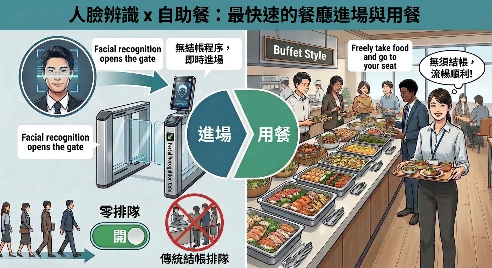

阅读本文你将了解
- 现有三种方式（图像识别、RFID、计量结算）能做什么，以及其局限
- 从根本上消除排队的"终极方法"——人脸识别闸机 × 统一结算的运作原理
- 终极方式的优点与缺点，以及公平性和定价方面的课题
- 该方式适合哪些类型的食堂
- 可添加到现有着陆页的标题与文案建议
在仅有60分钟的午休中，超过10分钟被"收银排队"消耗掉——这是许多员工食堂的共同难题。
出雲創安通过AI图像识别、RFID、计量结算这三种智慧食堂解决方案，已实现每人3〜5秒的高速结算。然而，对于"从根本上消除排队本身"这一需求，还有一种更进一步的终极方法。
现有三种方式能做的事，及其局限
目前的智慧食堂解决方案，可从以下三种方式中为食堂选定最优的结算方法。
- 图像识别结算：只需放下托盘，约1秒即可自动识别菜品，无需专用餐具即可运用。
- RFID结算：只需放下内置RFID的餐具，1秒即可高精度读取30种以上菜品。
- 计量结算：以克为单位公平计费，大幅减少自助餐形式的食物浪费。
这些方式将收银台的"识别"与"支付"时间缩短至3〜5秒，大幅减少排队与收银人员。即便如此，高峰期端着托盘的用户仍会在收银台前滞留，一定程度的排队仍不可避免。
消除排队的终极方法
"将手动结算的5个步骤彻底归零"
从根本上消除排队的终极方法，是一种全新的结算理念：统一结算 × 人脸识别闸机。传统的有人收银或自动收银，需要如下5个步骤的手动结算流程。
- 端着托盘在收银台排队
- 菜品的识别（手动或自动）
- 确认合计金额
- 准备支付方式并结算
- 领取小票等
终极方法让这5个步骤本身完全变得不必要。

原理：人脸识别闸机仅锁定"用餐者"，自动按统一价结算
终极方式的基本流程非常简单。
- 在食堂入口设置人脸识别闸机，进场时识别用户
- 进场的用户，无论吃多少，都成为"每次使用统一价"的计费对象
- 结算在后台自动处理，收银台不发生任何识别与支付行为
在这种方式下，无需识别托盘上的菜品，也无需支付操作。也就是说，由于结算步骤本身归零，在收银台前"排队"这一行为随之消失，排队在理论上不再发生。

事实上，该终极方式是由本公司的中国合作伙伴在当地员工食堂中已经实现的真实案例。在中国的部分员工食堂，已经采用并运行着在入口闸机进行人脸识别、并按用户自动结算固定金额的机制。出雲創安可将这一成熟的解决方案结合日本市场进行提供。
优点：排队归零与运营的简洁性
这一终极方式拥有传统结算系统所不具备的优点。
- 收银台本身变得不必要，不再产生等待结算的排队
- 无需识别托盘上的菜品，系统构成更加简洁
- 无需现金、IC卡、QR码等支付操作，大幅减轻用户的压力
- 可将结算业务的人力降至接近零，便于削减运营成本
- 可将食堂动线设计为"只进、只出"，消除拥堵瓶颈
对于希望将午休停留时间最大限度地用于"用餐、休息"的企业而言，这将成为极具吸引力的选择。
缺点：公平性与定价的课题
另一方面，这一终极方式也有明显的缺点。
- 由于食量少的人和多的人支付相同金额，食量少者容易产生"偏贵"的不满
- 若将统一价定得较高，整体使用率可能下降
- 从热量控制与营养管理的角度，难以获取按菜品单位的数据
因此，在运营时，重要的是设置公司对食堂运营的补贴，实现对用户具有吸引力的"低价统一定价"。
适合导入的食堂类型
这一终极方式适合满足以下条件的食堂。
- 每日使用量稳定较高、使用频率也高的大型员工食堂
- 方针明确的组织，即"无论如何都要消除排队""希望将结算业务尽量归零"
- 公司将食堂视为福利的一环、能够提供一定补贴的环境
现有三种方式（图像识别、RFID、计量结算）是兼顾"公平性"与"结算速度"的有效解决方案。在此基础上，作为面向重视福利企业的选项，加入人脸识别闸机 × 统一结算这一终极方式，便能提供不仅"减少排队"、更能"消除排队"的全新选择。
三种方式与终极方式的对比
| 项目 | 现有三种方式（图像识别·RFID·计量） | 终极方式（人脸识别闸机 × 统一价） |
|---|---|---|
| 结算速度 | 每人3〜5秒 | 结算步骤本身为零 |
| 排队 | 大幅缩短（仍残留一定滞留） | 理论上不发生 |
| 菜品识别 | 需要（通过AI/RFID/计量自动完成） | 不需要 |
| 支付操作 | 人脸识别·QR·IC卡 | 不需要（进场＝自动结算） |
| 公平性 | 按食用量·菜品计费 | 无论量多少均为统一价（需补贴设计） |
| 适合的食堂 | 希望兼顾公平性与速度的各类食堂 | 重视福利·大规模·追求排队归零 |
难以抉择？ → 我们将了解贵食堂的环境与运营方针，为您推荐现有三种方式与终极方式中的最优选择。我们还提供可在实际食堂中测试多种方式的免费PoC（概念验证）。